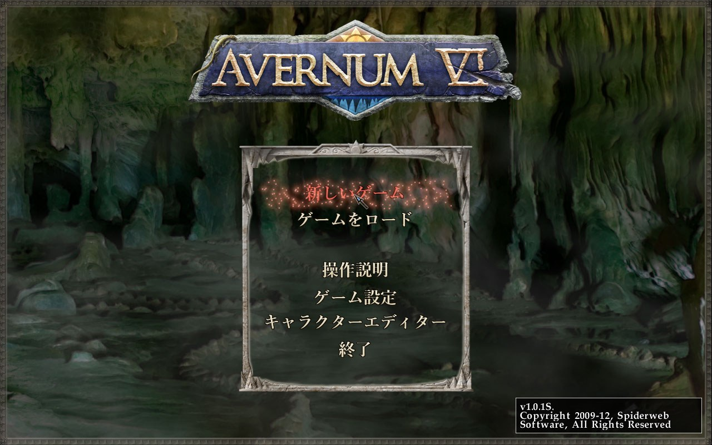
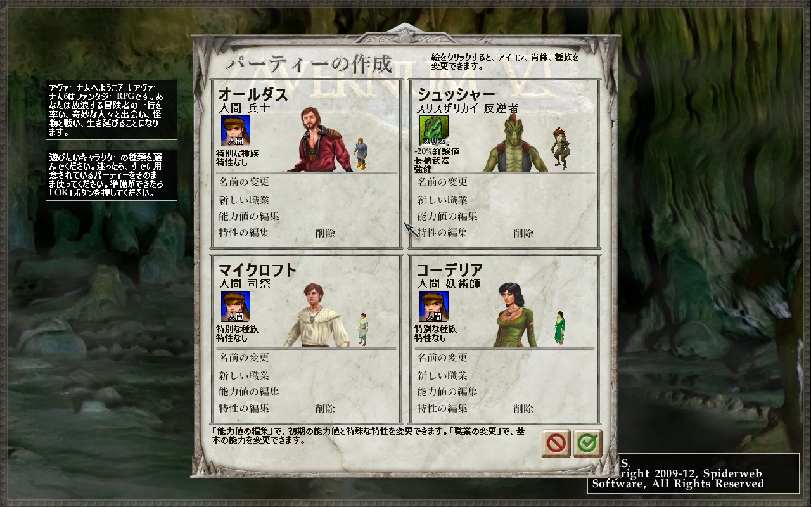
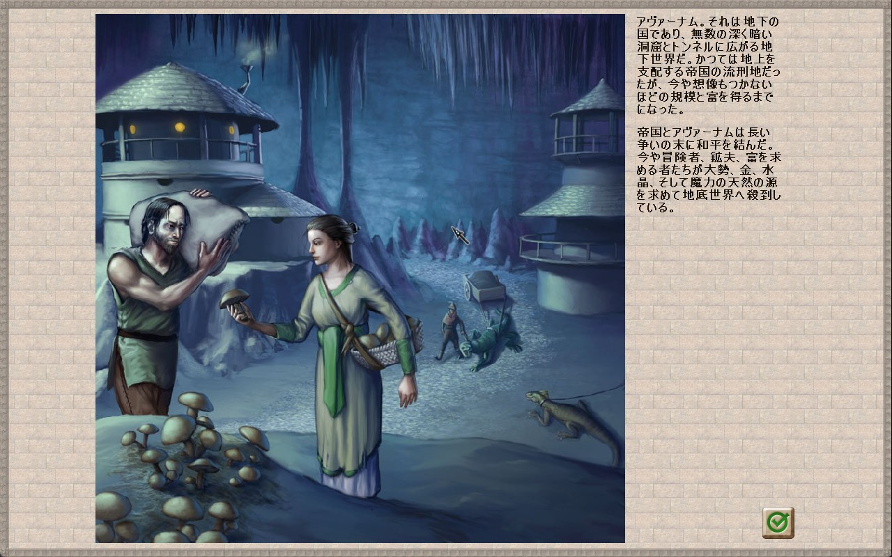
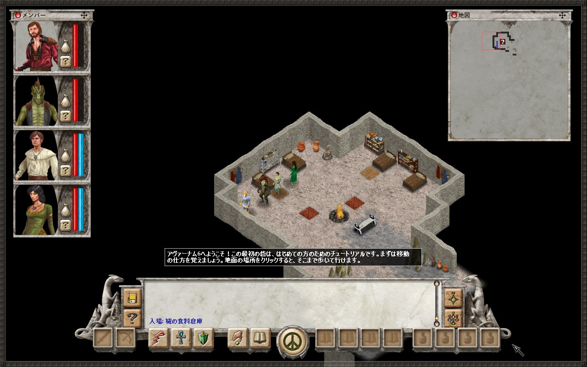
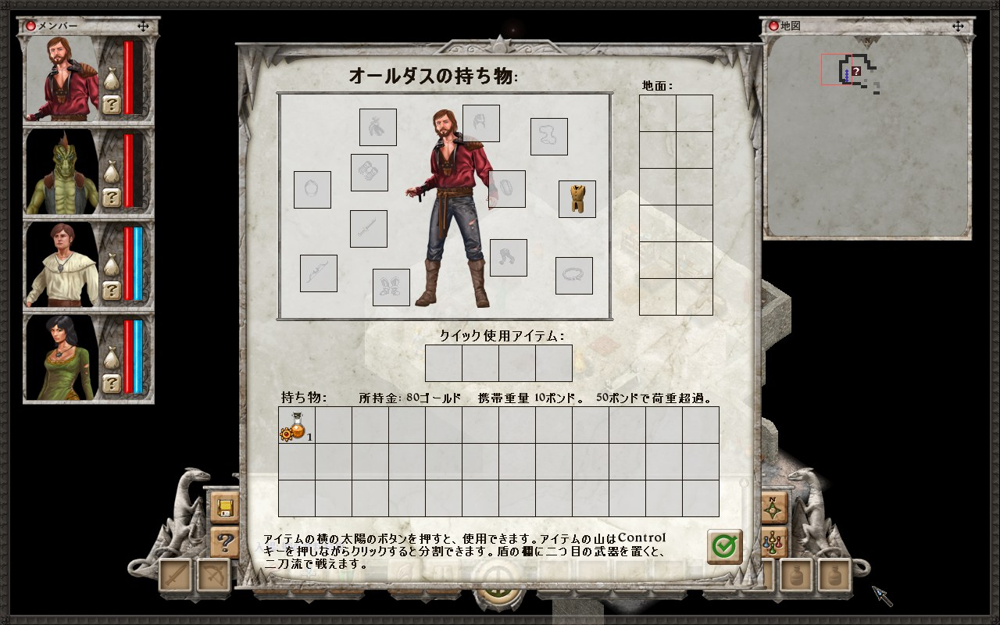
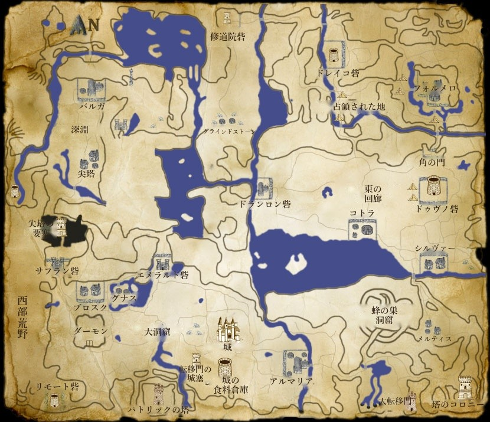

スクリーンショット












日本語になるもの
18,673
会話・本・イベントの文
2,810
人物・アイテム・呪文などの名前
352
地名・場所の名前
2,392
画面・ヘルプ・クエスト・物語
- すべての会話と選択肢、本やメモ、クエストの説明
- アイテム・呪文・スキル・特性・クリーチャーの名前と説明
- メニュー、ボタン、ツールチップ、戦闘ログなどの画面の文字
- 町や地方の名前、看板、場所に入ったときの説明
- タイトル画面やパネル見出し、操作説明など、文字入りの画像
- ヘルプ画面の絵や世界地図の地名
「Avernum: Escape From the Pit」「Avernum 2: Crystal Souls」「Avernum 3: Ruined World」「Avernum 4」「Avernum 5」の日本語化パッチと同じ訳語でそろえています。 英数字はゲーム本来の文字のまま、日本語は Windows の日本語フォントで表示します。
インストール方法
-
ダウンロード
リリースページから
Avernum6_JP_v0.9.0.zipをダウンロードし、展開します。 -
ゲームのフォルダにコピー
中身の
dsound.dll・avernum_jp.ini・avernum_jpフォルダを、ゲームのフォルダ（Avernum 6.exeのある場所）にそのままコピーします。ゲームのフォルダは、Steam でゲームを右クリック →「管理」→「ローカルファイルを閲覧」で開けます。
-
Steam から起動
いつもどおり Steam からゲームを起動すれば日本語になります。初回の起動時に、お手元のゲームのファイルから日本語版のデータを作ります。
ゲームの元のファイルは書き換えません。このパッチには元のゲームのファイルは入っておらず、お手元のファイルから日本語版のデータを作って
avernum_jp フォルダに保存します。
元に戻す・設定・注意
元に戻す
ゲームのフォルダから dsound.dll・avernum_jp.ini・avernum_jp フォルダを削除するだけで、英語版に戻ります。
設定
ゲームフォルダの avernum_jp.ini で、日本語の文字のフォント・太さ・大きさ・位置と、行の間隔を変更できます。
対応しているのは Steam 版です。GOG 版・Humble 版など他のストアの版は未確認です。Steam 版と同じ exe なら動きます。
対応できない版では日本語化を自動で止め、英語のまま普通に起動します。
他のストアの版で試した方は、動いたかどうかを
avernum_jp\avernum_jp.log を添えて
Issues でお知らせいただけると助かります。
ベータ版について
- 誤訳や表示の崩れが残っていることがあります。
- 起動時の画面の大きさを選ぶ小さな窓（Windows の標準の画面）は英語のままです。
- 英語版のセーブデータを読み込むと、記録済みのメモやログは英語のまま表示されます。新しく始めるのがおすすめです。
不具合・誤訳の報告
表示の崩れ、誤訳、不自然な言い回しなどは GitHub の Issues にお寄せください。 どの場面か（町の名前、話し相手など）とスクリーンショットがあると助かります。